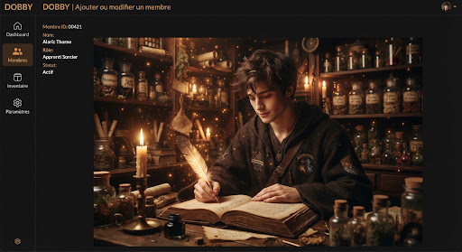

auto_fix_high
Registre des Âmes du Foyer
Inscription & Fiche du Membre
Ajoutez ou ajustez les détails d'un membre de la maisonnée pour ses rituels, remèdes et rendez-vous partagés.
1
Sceau magique
Silhouette & Allégeance

verified
Choisissez une allégeance ou un blason tutélaire :